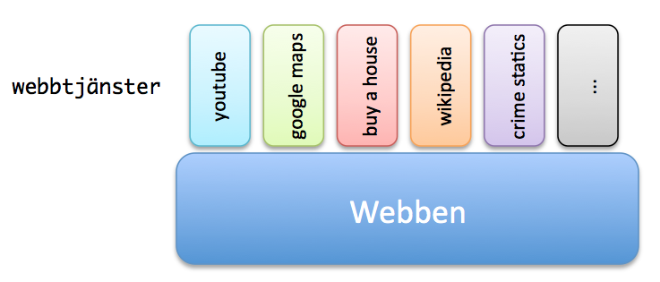
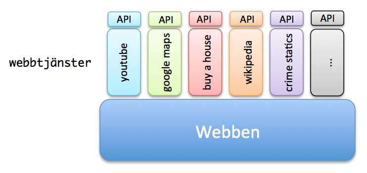

Web Management, 1IK424
Linnéuniversitetet, VT2013
PHP Part III, Mashup, Wordpress
Repetition - Array
- En variabel kan spara ett värde, en array innehåller en lista med flera variabler/värden
$arr = array("Hej", 12, 176, True, "Lisa", 87, 148);


Repetition - Funktioner
- Bryta ut kod som kan återanvändas
function add($number1, $number2) {
return $number1 + $number2;
}
$sum = add(13, 26);
echo($sum); // Skriver ut 39
$sum = add(3, 9);
echo($sum); // Skriver ut 11
Repetition

Att jobba med en associativ array
Seriefigurerexemplet
Multidimensionell Arrays
Ibland behöver man beskriva lite mer komplex data
| Produkt |
Pris |
Antal |
| Bultbräda |
499 |
12 |
| Sprakcykel |
876 |
2 |
| Modellera |
39.90 |
124 |
$shop = array(
array("Bultbräda", 499, 12),
array("Sparkcykel", 876 , 2),
array("Modellera", 39.90 , 124)
);
Multidimensionell Arrays
$shop = array(
array("Bultbräda", 499, 12),
array("Sparkcykel", 876 , 2),
array("Modellera", 39.90 , 124)
);
echo $shop[0][0]." kostar ".$shop[0][1]." kronor och det finns ".$shop[0][2];
echo $shop[2][0]." kostar ".$shop[2][1]." kronor och det finns ".$shop[2][2];
HTML-taggen <iframe>
Används för att öppna en annan sida inne i din html-sida
<iframe src="http://www.dn.se"></iframe>

Om man skulle kunna kombinera ihop data från olika tjänster till en egen tjänst?
Mashup
Mashup är en typ av webbapplikation som sammanställer information och funktionalitet från fler av varandra oberoende källor.
http://sv.wikipedia.org/wiki/Mashup
Mashup - webbtjänster

Mashup - API:er
API - Application Programming Interface
Enkelt för programmerare att komma åt data


Exempel
-
http://www.annonskartan.se - Blocket, google maps, tradera m.fl. annonstorg
-
http://www.flightradar24.com
- Google Maps, airport locations, broadcast air traffic data o.s.v.
- http://www.vackertvader.se
- Yr.no, google maps, m.fl.
- http://www.200ok.se/tv
- Soundcloud, Reddit, Instagram
- http://linuskarlsson.se/hjts
- Soundcloud, Reddit, Instagram
I laborationen

Varför delar man data?
- API:er kostar att utveckla
-
- Vår data är vår affärsidé
-
- Många anrop, mer trafik, mer kostnad för servrar
- Få din tjänst att användas
- Konkurensfördel
- Informationen är betald med skattemedel
- Knyta utvecklare som skapar tjänster
- Företagets interna system kan kräva detta
Öppen offentlig data
- Datamängder från offentlig sektor som människor kan ladda ner och bearbeta själva
- PSI-direktivet, EU:s
- Skattefinansierat
- Demokrati, minska kostnader, innovation till samhällets gagn
- statistik från hela samhället, geografisk data, ekonomiska uppgifter


WordPress
Vad är WordPress?
- Startade 2003 som ett "blogging system"
- Används också som ett CMS (Content Management System)
- Skrivet i PHP och med mySQL som databas
- Fitt och "open source"
- Utbyggningsbart med hjälp av teman, plugins, widgets
Varför använda WordPress?
- Enkelhet
- Fritt att använda
- The Community
- Teman (och plugin)
- "It´s more than just a blogging system"
- SEO - Search engine optimization
Exempel
source: http://wordpress.org/showcase/
https://coursepress.lnu.se/kurs/web-management/
Att komma igång...
 Detta verk är licensierat under en
Creative Commons Erkännande-IckeKommersiell-DelaLika 3.0 Unported Licens.
Detta verk är licensierat under en
Creative Commons Erkännande-IckeKommersiell-DelaLika 3.0 Unported Licens.